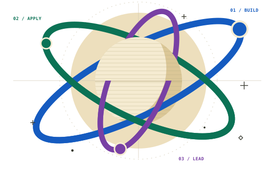

Wariant podstawowy · wdrożony
DoRoboty.ai
Syne 750, odstęp między literami −0,048 em. W menu 24 px; do 630 px: 21 px. Waga 750, do 650 px: 700.
DoRoboty.ai / system wizualny / v1.2 · Orbital B.02
Żywy wzornik korzysta z tych samych arkuszy CSS co produkt. Zawiera istniejące komponenty oraz nowe wzorce oznaczone jako propozycje.
01 / Podstawy znaku
Logo w interfejsie to wordmark w Syne. „.ai” używa tego samego fioletu co główne akcje. Trzy orbity ilustrują kategorie i pozostają osobnym elementem marki.
Syne 750, odstęp między literami −0,048 em. W menu 24 px; do 630 px: 21 px. Waga 750, do 650 px: 700.
Do miejsc, w których kolor nie jest dostępny. Pole ochronne: jedna wysokość widocznych liter — propozycja dla samodzielnych materiałów.
Zachowuj pisownię, proporcje i krój. Nie rozciągaj logo ani nie zamieniaj fioletu na kolor kategorii. Dostępny jest już pakiet SVG na krzywych, PNG i favicon. Zasady druku pozostają do opracowania. Obejrzyj i pobierz zasoby marki →
02 / Role koloru
Kategorie zawsze mają nazwę. Status rekrutacji opisujemy osobno. CTA pozostaje fioletowe w Build, Apply i Lead.
--dr-paper#f5efdf--dr-surface#fffaf0--dr-text#272e28--dr-text-muted#5f6255--dr-category-build#155bc0--dr-category-apply#0b7255--dr-purple#7840a4--dr-divider#d4ccb9Jasne tła kategorii: Build #e2edff, Apply #d8f2e6, Lead #ede0fa. Hover akcji: #65358a. Fokus: #2146b0. Proponowany błąd formularza: #a73512; nie jest kategorią.
03 / Typografia
Zażółć gęślą jaźń.
Syne 730 w nagłówku listingu, 700 na pozostałych ekranach; 750 w logo. Bez rozszerzania tego kroju na wszystkie dane i kontrolki.
Łódź · Wrocław · Hybrydowo
Ą Ć Ę Ł Ń Ó Ś Ź Ż
ą ć ę ł ń ó ś ź ż
Treść 16 px / 1,48. Krótkie etykiety, liczniki i nazwy pól: systemowy monospace 0,72 rem.
Szczegóły oferty używają Inter także w tytule stanowiska — to świadomy wyjątek istniejącego wzorca. Fonty są lokalne w pairing-fonts/.
04 / Rytm i geometria
Większe odstępy oddzielają sekcje. Mniejsze łączą treści, które czytamy razem.
| Element | Wartość we wdrożeniu | Zastosowanie |
|---|---|---|
| Kontener | 1190 px; od 1450 px: 1250 px | Główne wyrównanie wszystkich stron |
| Margines boczny | 40 / 21 / 18 px | Desktop / ≤920 px / ≤630 px |
| Góra listingu | 40 px + 38 px dół | Na telefonie 30 / 27 px |
| Sekcje redakcyjne | 36–64 px | Nowy wzorzec „O DoRoboty.ai” |
| Wnętrze panelu | 16–28 px | Formularze i panel rekrutera |
| Zaokrąglenia | 10 / 14 / 22 px | Kontrolka / panel / filtr |
| Obrys i znacznik | 1 / 4 px | Separator / pasek kategorii |
05 / Katalog komponentów
Przykłady są interaktywne. Kliknij filtry, otwórz szczegóły i sprawdź walidację formularza. Fokus pojawia się przy obsłudze klawiaturą.
Główna akcja: .detail-link. Drugorzędna: .text-button. Wariant disabled — nowy wzorzec. Link prowadzi do strony, button wykonuje akcję.
<button class="detail-link" type="submit">Zapisz</button>Wybrane: wszystkie kategorie
.chip + .area-chip + .cat-build / apply / lead. Zaznaczenie: aria-pressed, pełny kolor; pozostałe: jasne tło. „Wszystkie” zeruje wybór.
.workflow-field. Etykieta pozostaje widoczna. Nowy wzorzec błędu łączy aria-invalid, komunikat i obrys.
Apply oznacza stosowanie AI do wykonania pracy.
Konfigurujesz klasyfikację zgłoszeń i sprawdzasz jakość przypisań po wdrożeniu.
.workflow-panel i natywne details / summary. Używaj do objaśnień. Najważniejszych warunków oferty nie chowaj w rozwinięciu.
Kompaktowa próbka. Pełny wiersz, siatka i modal: otwórz listing. Miasto przed trybem. Wynagrodzenie zawsze z okresem i typem umowy.
Możesz wrócić do ofert.
Komunikat nazywa stan i daje kolejny krok. Sukces nie przejmuje zieleni kategorii Apply. Neutralne potwierdzenie — propozycja.
Nowe / v1.1
Kolorowy wybór roli, sekcje formularza, walidacja, szkic, podgląd i zapis w listingu. Błąd zapisu pozwala ponowić próbę.
Ładowanie, błąd pobierania, brak połączenia, pusty panel i niedostępna oferta. Każdy stan z czytelnym kolejnym krokiem.
06 / Przepisy na ekran
Nowe w v1.1: publikacja i edycja oferty testowej, stany ładowania, błędu i braku danych oraz pakiet logo i favicon. Zapis i stany sieci są lokalnymi demonstracjami, bez połączenia z API.
07 / Orbital B.02 · obowiązujący kierunek
Ciepły papier, atlasowa grafika i trzy kolorowe orbity. Ilustracja towarzyszy obietnicy produktu; formularze pozostają skupione na zadaniu.

Wersja statyczna: strona O DoRoboty.ai. Kolory i geometria są takie same jak w listingu.
Pobierz ilustrację SVG ↓Build: 90 s, Apply: 110 s, Lead: 130 s na pełen obieg. Wolny ruch po elipsach, bez pulsowania i paralaksy.
Przycisk pauzy pozwala zatrzymać i wznowić ruch. Preferencja ograniczenia ruchu wyświetla wersję statyczną. Animacja zatrzymuje się też poza ekranem, w ukrytej karcie i przy otwartym podglądzie oferty.
Filtry wygaszają niewybrane orbity. Nazwy i zaznaczenia pozostają dostępne w HTML.
Sprawdź animację i filtry →Wiersz oferty: minimum 113 px, 14 px odstępu. Separator atlasu: #a8ac98. Pozostałe obrysy: #d4ccb9. Fiolet akcji i kolory kategorii pozostają wspólne na wszystkich ekranach.